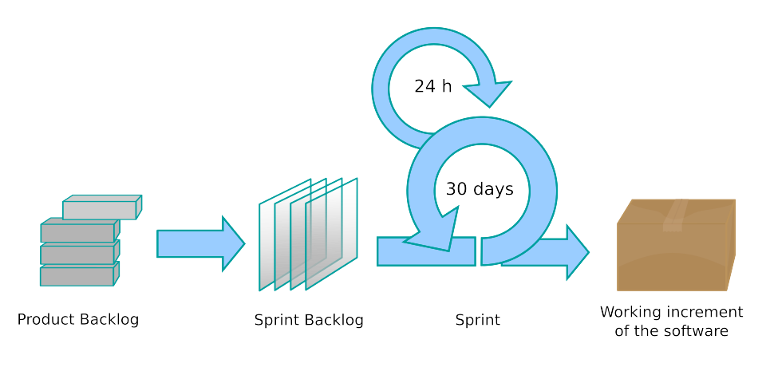
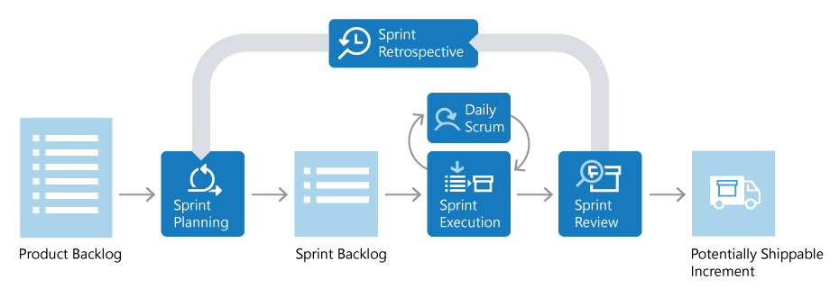
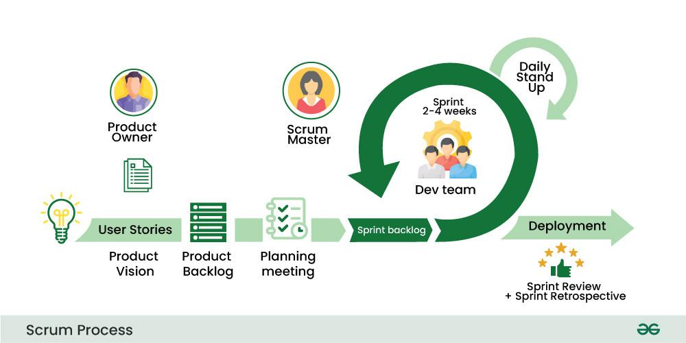
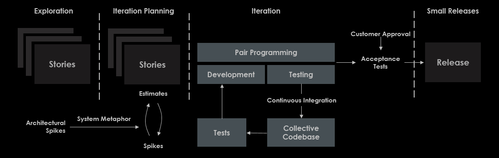
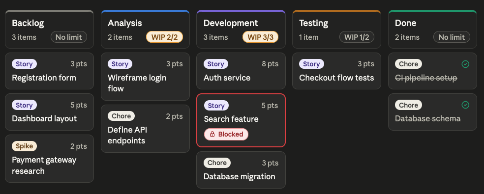
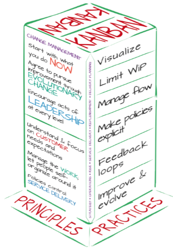

Work in pairs, select one of the following Scrum diagrams to analyze:
What's missing?
What's emphasized?
What's de-emphasized or hard to find?
What's potentially misleading?
Diagram Analysis (15 minutes)

Source: By Lakeworks - Own work, CC BY-SA 4.0, https://commons.wikimedia.org/w/index.php?curid=3526338
On the far left is the Product Backlog, represented as a stack of three overlapping gray book or card shapes, suggesting an ordered list of items. The label Product Backlog appears below the stack. An arrow points right from the Product Backlog toward the next element. The next element is the Sprint Backlog, represented as a three-dimensional binder or folder icon rendered in a warm brown tone, with a zigzag tab along the top edge and a stack of parallelogram shapes inside. The label Sprint Backlog appears below. An arrow connects the Sprint Backlog to the central process. The central and largest element is the Sprint, depicted as a large circular sweeping arrow forming a closed loop. Inside this loop the label 30 days appears. Within the sprint loop, a smaller inner circular arrow represents the Daily Scrum, labeled 24 h above it. The label Sprint appears below the main loop. On the right side of the diagram, a second arrow points outward from the sprint loop toward a stack of four colored parallelogram shapes, rendered in graduated gray tones. The label Working increment of the software appears in two lines to the right of this stack.
Diagram Analysis (15 minutes)

Source: Scrum lifecycle, May 2026. https://learn.microsoft.com/en-us/devops/plan/what-is-scrum
The diagram presents the Scrum lifecycle as a left-to-right horizontal flow with a feedback loop returning from right to left along the top. On the far left is the Product Backlog, depicted as a light blue document icon with horizontal lines representing list items. It is labeled Product Backlog beneath the icon. A right-pointing arrow leads from the Product Backlog to the first active step. The first active step is Sprint Planning, shown as a dark blue rounded square with a circular arrow icon inside it suggesting a refresh or planning cycle. The label Sprint Planning appears inside the box. An arrow leads from Sprint Planning to the next element. Next is the Sprint Backlog, depicted again as a light blue document icon similar to the Product Backlog but styled as a checklist with bullet points. It is labeled Sprint Backlog beneath the icon. An arrow leads from the Sprint Backlog to the next step. The next step is Sprint Execution, shown as a dark blue rounded square with an icon depicting a task board or grid with a downward arrow. Sprint Execution is labeled inside the box. Above Sprint Execution, connected by a small circular double-headed arrow, is a smaller dark blue rounded rectangle labeled Daily Scrum, with an icon showing a circular arrow and a person figure. There is a circular arrow between Daily Scrum and Sprint Execution. From Sprint Execution, an arrow leads right to Sprint Review, a dark blue rounded square with a magnifying glass or inspection icon inside it. Sprint Review is labeled inside the box. From Sprint Review, an arrow leads to the final element on the far right: the Potentially Shippable Increment, shown as a light blue box with a delivery truck icon. It is labeled Potentially Shippable Increment beneath the icon. At the top of the diagram, above the main flow, sits Sprint Retrospective as a dark blue rounded rectangle with a circular arrow and clock icon, labeled Sprint Retrospective. A wide curved gray arrow originates near Sprint Review on the right side of the diagram, travels upward and then sweeps left across the top of the entire diagram, and curves back down on the left side near Sprint Planning.
Diagram Analysis (15 minutes)

Source: Scrum process, May 2026. https://www.geeksforgeeks.org/software-engineering/scrum-development-model-in-sdlc/
The diagram is titled Scrum Process and appears in the lower left corner with the GeeksforGeeks logo in the lower right. On the upper left, a circular avatar icon depicts the Product Owner. Beneath the Product Owner icon is a document icon representing the Product Backlog. On the far left of the main horizontal flow is a lightbulb icon labeled Product Vision below it. A horizontal arrow labeled User Stories leads right from the Product Vision to the Product Backlog icon. From the Product Backlog, the flow continues right to a Planning Meeting icon, depicted as a checklist with a clock, labeled Planning meeting below it. In the upper center of the diagram, a circular avatar icon depicts the Scrum Master. The label Scrum Master appears below the icon. The Scrum Master is positioned above the Planning Meeting icon. From the Planning Meeting, a horizontal arrow labeled Sprint backlog leads right into the central sprint element. The central element is a large circular green arrow forming a closed loop, representing the Sprint. Inside the loop is a group icon depicting three people labeled Dev team below them. Above the team icon, inside the loop, the text Sprint 2-4 weeks indicates the sprint duration. In the upper right of the circular arrow, outside the loop, a smaller curved green arrow points upward and loops back, labeled Daily Stand Up to its right. From the right side of the sprint loop, a wide green arrow points right and is labeled Deployment. Below the Deployment arrow on the lower right is a rating or review icon showing a thumbs-up surrounded by stars, labeled Sprint Review + Sprint Retrospective below it.
Backlog Items
User Story: Customer-focused requirement template
Task: Work item created by breaking down a larger requirement
Bug: Item dedicated to identifying and repairing software defects or errors
Spike: Research item used to reduce technical uncertainty before development begins
Epic: Hgh-level block of requirements that spans multiple sprints
User Stories
Structured templates to capture software requirements from an end-user perspective:
As a [type of user],I want [some goal or objective],so that [benefit, value].
Story Points: Relative effort (complexity + uncertainty + work):
Source: By DonWells - Own work based on: XP-feedback.gif, CC BY-SA 3.0, https://commons.wikimedia.org/w/index.php?curid=27448045
The diagram is titled Planning/feedback loops. It illustrates the nested feedback cycles of Extreme Programming across multiple time scales. The right side of the diagram presents eight labeled activities arranged vertically from top to bottom, connected by a cascade of downward-pointing arrows. Each arrow has a time duration label to its right indicating how frequently that feedback cycle operates. The sequence from top to bottom is as follows. Release plan is at the top, connected by a downward arrow labeled Months to Iteration plan. From Iteration plan, a downward arrow labeled Weeks leads to Acceptance test. From Acceptance test, a downward arrow labeled Days leads to Stand-up meeting. From Stand-up meeting, a downward arrow labeled One day leads to Pair negotiation. From Pair negotiation, a downward arrow labeled Hours leads to Unit test. From Unit test, a downward arrow labeled Minutes leads to Pair programming. From Pair programming, a downward arrow labeled Seconds leads to Code at the bottom. The left side of the diagram contains eight large curved arrows arranged as a series of nested arcs. Each arc originates from the lower-left area of the diagram and sweeps upward and to the right, pointing its arrowhead at one of the eight labeled activities. The outermost and largest arc points to Release plan at the top. Each successive arc is smaller and points to the next activity down the list, with the innermost and smallest arc pointing to Code at the bottom. Together these arcs create the visual impression of concentric loops, communicating that each activity both receives feedback from and sends feedback to the others.
XP Process

Source: XP, May 2026. https://www.visual-paradigm.com/scrum/extreme-programming-vs-scrum/
The diagram is titled with four phase labels arranged horizontally across the top: Exploration on the far left, Iteration Planning second from the left, Iteration spanning the large central section, and Small Releases on the far right. Three vertical dashed lines separate these four phases. In the Exploration phase on the far left, a stack of three overlapping rectangular cards is labeled Stories. Below the Stories stack, the label Architectural Spikes appears with an arrow pointing right labeled System Metaphor. In the Iteration Planning phase, another stack of overlapping cards is again labeled Stories. Above this stack, an upward-pointing arrow is labeled Estimates, and below the stack a downward-pointing arrow points to the label Spikes. A bidirectional relationship is shown between the Stories stack and Spikes. The System Metaphor arrow from the Exploration phase enters this section at the bottom, feeding into the planning process. The Iteration phase occupies the largest portion of the diagram. In the upper portion of this phase, a wide horizontal box labeled Pair Programming spans the full width. Directly below Pair Programming, two side-by-side boxes labeled Development and Testing sit together. An arrow leads right from Development and Testing toward Acceptance Tests. Below the Development and Testing boxes, a downward arrow labeled Continuous Integration points to two boxes in the lower portion of the Iteration phase. On the lower left is a box labeled Tests and on the lower right is a box labeled Collective Codebase. An arrow points left from Collective Codebase to Tests, and arrows lead back upward from Tests toward the Development and Testing level, forming a continuous loop between coding, integration, the collective codebase, and the test suite. In the Small Releases phase on the far right, Customer Approval appears at the top with a downward arrow pointing to Acceptance Tests. An arrow then leads right from Acceptance Tests to a box labeled Release.
Kanban Principles
Eliminate Waste: Remove anything that doesn't add value.
Amplify Learning: Use feedback loops continuously.
Decide as Late as Possible: Most information exists at the last responsible moment.
Deliver as Fast as Possible: Reduce cycle time; don't batch unnecessarily.
Empower the Team: Those closest to the work make the best decisions.
Build Integrity In: Quality is not a phase; it's continuous.
See the Whole: Optimize the system, not just individual steps.
Full column = a signal, not a status. Exposes bottlenecks immediately.

The graphic depicts a Kanban board with five columns arranged horizontally from left to right: Backlog, Analysis, Development, Testing, and Done. Each column has a header bar with a colored top border accent and displays a WIP notation badge alongside an item count. Below each header, task cards are stacked vertically within the column. The Backlog column has a gray top border accent. Its header shows 3 items and a badge labeled No limit, indicating no WIP restriction applies. The column contains three cards. The first is a Story type card worth 3 points titled Registration form. The second is a Story type card worth 5 points titled Dashboard layout. The third is a Spike type card worth 2 points titled Payment gateway research. Story badges appear in light purple, Spike badges in light amber, and Chore badges in light gray throughout the board. The Analysis column has a blue top border accent. Its header shows 2 items and an amber badge labeled WIP 2/2, indicating the column is at its maximum capacity of 2 items. The column contains two cards. The first is a Story type card worth 3 points titled Wireframe login flow. The second is a Chore type card worth 2 points titled Define API endpoints. The Development column has a purple top border accent. Its header shows 3 items and an amber badge labeled WIP 3/3, indicating this column is also at its maximum capacity of 3 items. The column contains three cards. The first is a Story type card worth 8 points titled Auth service. The second card is visually distinct from all others on the board: it has a red border on all sides, indicating a blocked status. It is a Story type card worth 5 points titled Search feature, and it displays a small red badge with a lock icon labeled Blocked. The third card is a Chore type card worth 3 points titled Database migration. The Testing column has an amber top border accent. Its header shows 1 item and a neutral badge labeled WIP 1/2, indicating this column has available capacity and can accept additional work. The column contains one card, a Story type card worth 3 points titled Checkout flow tests. The Done column has a green top border accent. Its header shows 2 items and a badge labeled No limit. The column contains two completed cards. Both display a green checkmark icon and have their titles rendered in strikethrough text to indicate completion. The first is a Chore type card titled CI pipeline setup. The second is a Chore type card titled Database schema.
Kanban: Flow Metrics
Metric
Measures
Use to...
Cycle Time
"Started" → "Done"
Predict delivery reliability
Lead Time
"Requested" → "Done"
Set customer expectations
Flow Efficiency
% of time actively worked vs. waiting
Expose waste
Kanban: Value Stream Mapping
Value Stream Map example: Requested → Analysis (2d) → [wait 3d] → Dev (5d) → [wait 4d] → Test (2d) → Done
Lead time: 16 days, Active: 9 days, Flow Efficiency: 56%
Most teams measure 15–40% flow efficiency. The waiting time is the target.
Improvement model: No sprint boundary, no forced retrospective.
Change one thing; measure the effect; repeat.
Kanban Principles and Practices

Source: Kanban principles and practices, May 2026. https://djaa.com/kanbans-change-management-principles/
The diagram presents a three-dimensional box oriented at an angle so that two of its front faces are visible simultaneously, along with the top face. The word KANBAN is printed in large diagonal block letters across the top face of the box. Running along the top edge of the box, wrapping around the upper rim, is a horizontal line of smaller text listing application domains: STRATEGY, OPERATIONS, RISK, SERVICE DELIVERY, DEPLOYMENT, IMPLEMENTATION, and additional terms continuing around the edge. At the base of the box, two flat rectangular surfaces extend outward like a floor or platform beneath the structure. The left platform is labeled PRINCIPLES in large uppercase text, and the right platform is labeled PRACTICES in large uppercase text, anchoring each visible face of the box to its corresponding category. The left face of the box contains the Kanban principles, organized into two distinct groups separated by a horizontal line. The upper group is headed CHANGE MANAGEMENT in orange text. Beneath this heading, four principles are listed. The first reads: Start with what you do NOW, with the word NOW emphasized in large orange text. The second reads: Agree to pursue improvement through EVOLUTIONARY CHANGE, with EVOLUTIONARY CHANGE emphasized in large green text. The third reads: Encourage acts of LEADERSHIP at every level, with LEADERSHIP emphasized in large blue text. The lower group on the left face is headed SERVICE DELIVERY in orange text. Beneath this heading, three principles are listed. The first reads: Understand and focus on CUSTOMER needs and expectations, with CUSTOMER emphasized in orange. The second reads: Manage the WORK, organize self, organize around it, with WORK emphasized. The third reads: Policies control SERVICE DELIVERY, with SERVICE DELIVERY emphasized in orange. The right face of the box contains the Kanban practices, listed vertically as a single column of six items in clean handwritten-style text. From top to bottom the practices are: Visualize, Limit WiP, Manage flow, Make policies explicit, Feedback loops, and Improve and evolve.
Blending Methodologies
Real teams mix and match
None is universally better, they address different parts of the SDP